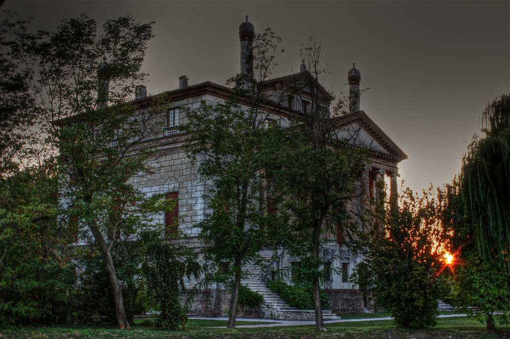

Sprzysięga się wszystko, by nas przemilczeć
Wszystko jest kwestią interpretacji. Unosimy się nad krainą słów, stąpamy lekko przez daleki krajobraz cieni. Nigdy jednak nie docieramy do słów samej istoty, do ich najbardziej skrytego, osobistego znaczenia. Żyjemy ułudą niezrozumienia.
La Malcontenta czyli Villa Foscari, renesansowa willa w miejscowości Mira w pobliżu Wenecji, zaprojektowana przez Palladia na zamówienie braci Nicola i Luigiego Foscari. Określenie „La Malcontenta” (Niezadowolona) odnosi się wedle legendy do zesłanej tu za niewierność małżeńską członkini rodu Foscari. O tej kobiecie rozmyślał Rilke, podziwiając wraz z księżną Marie von Thurn und Taxis pejzaże okolic Wenecji.
Jakimże wzruszeniem przejmował go widok opustoszałych willi w dolinie Brenty, przede wszystkim tej jednej, o wysokich kolumnach, zwanej «La Malcontenta», budowli zaiste odosobnionej i posępnej, którą pewien wenecki szlachcic polecił wznieść dla swej córki — skłonnego do melancholii dziewczęcia o imieniu Malcontenta. I znów mógł Rilke do woli snuć marzenia o tej pięknej, przygnębionej smutkiem patrycjuszce.
W rzeczywistości nazwa ta ma swój bardziej prozaiczny źródłosłów w znacznie starszym „niezadowoleniu” miast Padwy i Piove di Sacco, protestujących przeciwko podjętym w roku 1431 przez Wenecję pracom przy przekopywaniu nowego koryta rzeki Brenty, nad którą leży wioska Malcontenta. Czy fakt ten jednak mógłby służyć poecie za źródło inspiracji? Czyż nie milej oddawać się ułudzie legendy, tkać marzenia z nastrojów wyobraźni?
Cóż nam po słowach, które nie niosą dla nas w sobie żadnego znaczenia? Czyż słowa potrafią istnieć osamotnione, unosić się w pustce, bez naszego udziału? Czyż to nie my sami nadajemy im kształt, snujemy wraz z nimi opowieść i oddajemy wieczności? Czy przypadamy do smaku wszechświatom, w których nikniemy? Czy jesteśmy tylko wmieszani w ich rysy? „My tylko mijamy obok wszystkiego jak fala powietrza. I sprzysięga się wszystko, by nas przemilczeć”.
Fragmenty „Wspomnienia o Rainerze Marii Rilkem” pióra księżnej Marie von Thurn und Taxis w przekładzie autora, fragmenty „Elegii duinejskich” w przekładzie M. Jastruna.